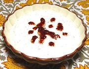

|
Cheese & Labne DipTurkey - Patilican Salatasi | ||||
| Makes: Effort: Sched: DoAhead: |
1-1/2 cups ** 45 min Best |
An outstanding dip or spread for pita bread or raw vegetable sticks. Excellent for any buffet or appetizer situation. | |||
|
1/4 1 2 1 1/2 1/4 1/4 ---- 1 1/2 |
c c cl t T c t --- t t |
White Cheese (1) Labne (2) Garlic Mint, dried Dill, fresh Olive Oil, ExtV Cumin -- Garnish Olive Oil, ExtV Aleppo Chili (3) |
Make - (45 min (15 min work))
|